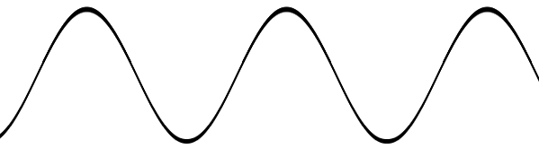

home
homeBeginners Guide to going Wireless
| Computer Tutorials List |
|
|
What are wireless signals?
We have these boxes in our living room that send wireless signals to the computers. The computers then sends wireless signals back to the box. But what's being sent? Just what, exactly, is a wireless signal?
Electromagnetic Radiation
Think of the Sun. It blasts out energy. This energy is called Electromagnetic Radiation. It is electrical and magnetic. In the diagram below, the Electromagnetic wave is coming from the sun.
The energy is given different names: Gamma Rays, X-Rays, Ultraviolet, Radio waves. The length of each wave is what gives rise to the names. In the image below, we see the depiction of a wave. Notice the crests and troughs. A wave is measured from one crest to another. Gamma Rays will have a very short distance between the crests; radio waves have a longer distance.

Radio Waves
So the wireless signals in the home are radio waves. Radio waves from a wireless router are pumped out at between 2.4 and 2.5 Gigahertz (GHz). This means 2.4 to 2.5 billion waves per second. The width of the wavelength, though, will be about the same.
Waves of the same length can interfere with each other. If you have a Microwave oven, for example, the distance between the crests will be the same as the signals from your wireless router. Your wireless signals will be disrupted if they meet those of your Microwave oven, say.
Other electric devices know to clash with your wireless signals are:
- Digital phones
- A Baby's cot monitor
- Bluetooth gadgets
- Other wireless router
This is because the distance between the crests of the waves is more or less the same for all these devices, and so they clash. To solve this problem, you can change the frequency of the radio waves. On a wireless router, this is called changing the channels. What you're doing here is changing the number of waves per second. The changes you're allowed to make are from 2.4 to 2.5 GHz. You make these changes from the router's control panel (called the configuration page). So channel 1 will mean 2.41 GHz, channel 2 will mean 2.42 GHz, channel 3 will mean 2.43 GHz, and so on.
Other problems are objects getting in the way. If a signal is sent to your computer then it may get bounced off walls, windows, glass mirrors, carpeted floors, and many other objects, before it reaches your computer. At the PC end, this can mean a slow connection. The radio waves are travelling at the same rate but, due to signal bounce, it's taken longer to reach its destination. Things that can cause problems for your wireless router are:
- Glass doors, glass mirrors, glass in windows
- Shiny metallic surfaces
- Fish tanks (it's the water)
- Internal walls made of brick
- Stud partitioning in walls
- Carpets
Conclusion
So, the wireless signals bouncing around the home are radio waves. And radio waves are a form of electromagnetic energy.
It may not be such a comforting thought that we've introduced electromagnetic radiation into the home, and that's it's travelling back and forth between the computer and the wireless box! Which begs another, far more important, question: Are these radio waves a danger to your health? In the next article, we'll investigate that very worrying possibility.
<-- Wireless Routers Explained | Are Wireless Signals Dangerous? -->
<--Back to the Beginner's Computing Contents Page
View all our Home Study Computer Courses